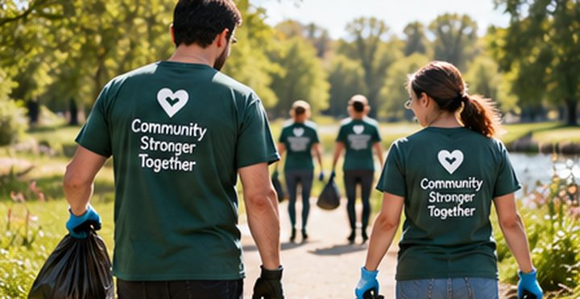
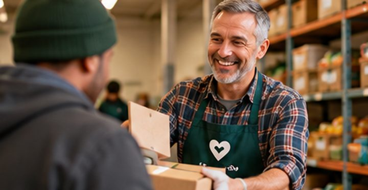

Our purpose
Connect neighbours through simple, flexible volunteering that helps local communities thrive.
Notifications
Finish setting up your profile
Add your area and how you want to take part to see tasks near you and your best matches.
Complete profileYou are all caught up.
Notifications
Finish setting up your profile
Add your area and how you want to take part to see tasks near you and your best matches.
Complete profileYou are all caught up.
We make it easier for neighbours to help one another, one small act of kindness at a time.
Life gets busy, and not everyone can commit to regular volunteering. Yet every community is full of people who can spare a little time, and neighbours who could use a hand with everyday things.
QuickVolunteer brings them together through short, flexible tasks of 15 to 60 minutes: collecting a grocery order, a weekly check-in call, or help with a form or letter. Every task makes someone's day a little easier.
We are building a community where giving and receiving help both feel natural.
Connect neighbours through simple, flexible volunteering that helps local communities thrive.

A community where everyone has the chance to contribute, belong and make a difference, however much time they have.

Kindness, inclusion and trust, and the belief that small actions can create lasting change.
One account lets you ask for help, offer support, or do a little of both. Every task is short and manageable, in person or remote.
Find your fitChoose a task near you, or post what you need.
Make a connectionA verified neighbour offers to help and you agree the details.
Make a differenceConfirm the task is done. The time given is added to the volunteer's hours.
Start with one small task. You never know how much it might mean.